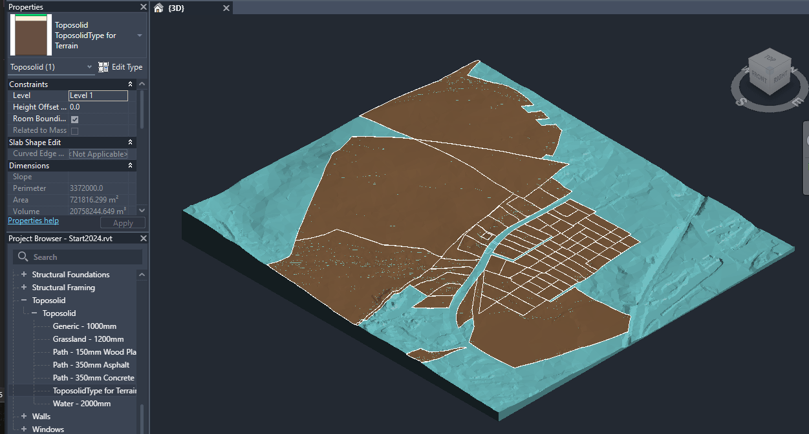

Today, let's take a quick look at CefSharp and two conversations shedding light on specific aspects of Toposolids and camera settings:
Andrej Licanin of Bimexperts shared a nice succinct little solution demonstrating how to use the Revit built-in CefSharp installation to display a browser in a WPF control in the Revit API discussion forum thread on simple WPF with a chromium browser guide:
This is for all the lost souls out there, may you avoid my suffering.
To create a chromium web browser in your Revit addin, you need to reference cefsharp dlls. This is where I had a major hiccup, because I just installed the newest one by nuget. Don't do this. Revit already has them and it initializes them on start-up. You just need to add references to them like the other Revit API .dlls. They are in the CefSharp folder. For me, that is C:\Program Files\Autodesk\Revit 2022\CefSharp, and the files are:
- CefSharp
- CefSharp.BrowserSubprocess.Core
- CefSharp.Core
- CefSharp.Wpf
Once installed, you can just add a WPF window, reference the namespace and embed a chromium browser like this:
<Window x:Class="RevitTestProject.TestWindow"
xmlns="http://schemas.microsoft.com/winfx/2006/xaml/presentation"
xmlns:x="http://schemas.microsoft.com/winfx/2006/xaml"
xmlns:mc="http://schemas.openxmlformats.org/markup-compatibility/2006"
xmlns:d="http://schemas.microsoft.com/expression/blend/2008"
xmlns:local="clr-namespace:RevitTestProject"
xmlns:cef="clr-namespace:CefSharp.Wpf;assembly=CefSharp.Wpf"
mc:Ignorable="d"
Width="1000" Height="500">
<Grid Background="PapayaWhip">
<cef:ChromiumWebBrowser Name="ChromiumBrowser"
Address="http://www.google.com"
Width="900" Height="450"/>
</Grid>
</Window>
Hope this helps someone, as I lost an entire day figuring this out.
Thank you very much, Andrej!
A Toposolid subdivision material can be set using a specific built-in parameter to hold the material id:
Question: In Revit 2024, I'm creating a Toposolid using a ToposolidType that has a finish layer with a texture in the material. I then use Toposolid.CreateSubDivision to create a subdivision in the toposolid, but this subdivision is not inheriting the material from the hosting toposolid. Any ideas what I need to do to get the material to show properly? Is there a way to set the material for the top face of a Toposolid?

The brown areas are the subdivisions.
Answer: The subdivision is designed NOT to inherit materials from the host toposolid. Also, "Edit Type" is not enabled in the UI. As an alternative, could you try to change the material Id of the subdivision element and see if that works?
Response: Toposolid does not have a MaterialID. That's why I had to bake the material into the ToposolidType.
Answer: The subdivision has a BuiltInParameter TOPOSOLID_SUBDIVIDE_MATERIAL to control the material.
It can only be set to one material id.
I did a quick example.
Please check out the following code for reference:
[Transaction(TransactionMode.Manual)]
public class ChangeSubdivisionMaterial : IExternalCommand
{
public Result Execute(ExternalCommandData commandData, ref string message, ElementSet elements)
{
var uidoc = commandData.Application.ActiveUIDocument;
var doc = uidoc.Document;
var sel = uidoc.Selection;
Toposolid topo = doc.GetElement(sel.PickObject(
ObjectType.Element, new ToposolidFilter())) as Toposolid;
ToposolidType topoType = doc.GetElement(topo.GetTypeId()) as ToposolidType;
ElementId materialId = topoType.GetCompoundStructure().GetLayers().First().MaterialId;
List<Toposolid> subdivisions = new FilteredElementCollector(doc)
.OfClass(typeof(Toposolid))
.OfType<Toposolid>()
.Where(t => t.HostTopoId == topo.Id)
.ToList();
Transaction trans = new Transaction(doc, "change material");
trans.Start();
subdivisions.ForEach(t => t.get_Parameter(
BuiltInParameter.TOPOSOLID_SUBDIVIDE_MATERIAL)
.Set(materialId));
trans.Commit();
return Result.Succeeded;
}
}
Thanks to Greg Marr and Yueqiang Ni for this explanation.
The Revit API does not care much about the camera target, but other environments do:
Question: I'm looking to convert Revit views for transfer into cloud REST API calls e.g. into LMV. Looking over supplied Revit help on the subject, I've found most of what I need but I'm curious if there's any way in API to retrieve the view camera target point as listed in that documentation? The docs suggest that the target can be reset to the FOV centre, but not how to get the existing value, or whether the value has any significance to Revit e.g. orbit point.
I looked at some existing related articles, e.g.:
They help confirm aspects covered by the linked documentation. The challenge is that going the other way, creating a valid target for APS, is less easily grasped since Revit doesn't expose this in the API. So far I'm extrapolating from the crop box, and it doesn't seem to matter if I pick e.g. a ray through the near clipping plane or far clipping plane, LMV gets the general idea. It's not quite right in result yet, though.
Answer: I am not finding a way to get the target using the API. As a workaround, I can suggest trying to fake the target location. For example, if you look from above, the field of view makes a triangle. If you know the horizontal extent of the view, you can find how far the base of the triangle is from the camera's eye. Note that this is different from the distance to near / far planes. You could also perform a calculation based on the bounding box of the scene (view outline). If you can get the outline in view coordinates (and have it axis-aligned), then you can assume that the target is on the far face of the box. (This is still different from the far clipping plane.) Unfortunately, the target is not used consistently in Revit, including for navigation. So, it is fair to say that the significance of the location is not great. This might explain why it has been neglected in API.
Response: I think I grasp the fundamentals you mean but am unsure which components in the API describe them. For example, you mention a distinction between the base of the view's frustum (triangle as seen from above when including the origin) and the far clipping plane. Yet the diagram in the docs (lets' start with perspective) shows the Crop Box of the view as describing the clipping planes. Not clear to me which object contains this smaller frustum you reference. (of course this is all hard to convey in text, we might need a diagram :laughing:). I should also have been specific in that the views of interest for us are 3D at this time.
Answer: The crop box is view aligned and all six sides are potentially clipping planes. Near/Far as used with perspective are generally independently managed. For your case, I would suggest that you disregard perspective near/far and just try to obtain some sensible values based on the crop box and view outline. In other words, a workaround for not having a target position is to try to locate the target based on scene depth. You could place the fake target in the center of some bounding volume of the scene or on its far side. You could even try to shoot a ray and intersect the closest object. I think that can be done using the API. It will not be the camera's exact target, however. But, as I said, it is not consistently used for navigation, so it might not be that useful anyway.
Response: Sounds good – I think my current code uses the far side of the crop box at the moment. I'll experiment further. Some of this will likely depend on what LMV and related tooling does with the input anyway. a follow-up, if you know – is it feasible to find out from the Revit API the actual navigation pivot point?
Answer: I doubt it, because it is a dynamic concept. For example, if you have something selected, then the pivot point can be the center of selection. It looks like you might be able to get/set a home camera using ViewNavigationToolSettings. And it has a pivot point (but no target). That seems to be the closest one can get... For completeness, there is a target value one can get during the custom exporter process, but it is a fake value, which is computed as I roughly described above. It's something like
0.5 * view width / tan(fov / 2)
Response: Thanks very much! And target and pivot are not the same.
Thanks to Jeff Hotchkiss and Alex Pytel for this clarification.